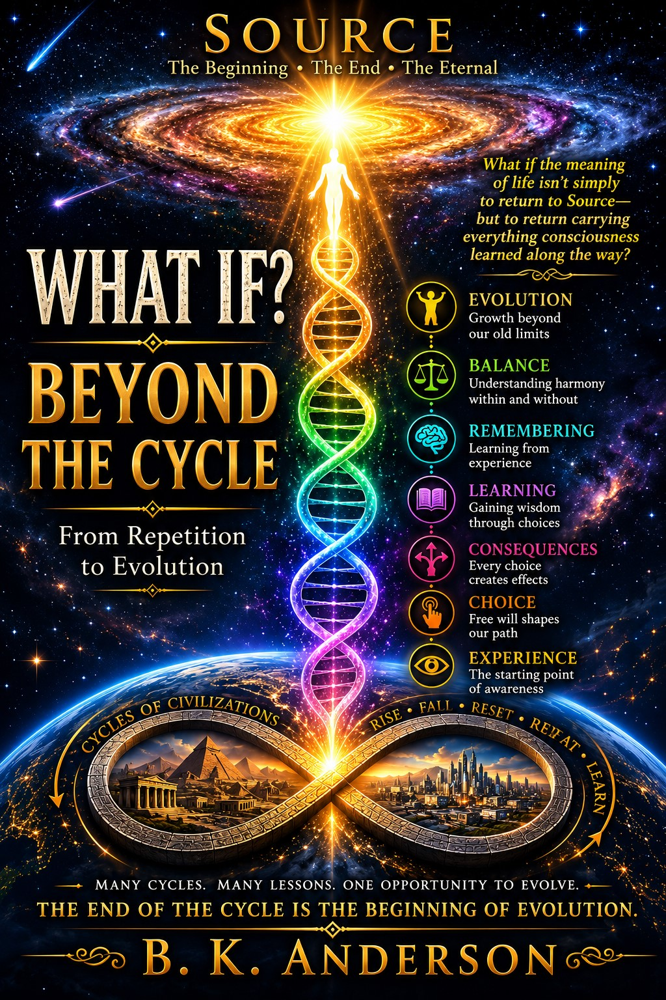

About This Book
What if recognizing the cycle is only the beginning?
In the first What If?, the questions led backward—through archaeology, ancient civilizations, traditional stories, human origins, lost worlds, and the repeating patterns that appear throughout the human story.
Beyond the Cycle: From Repetition to Evolution turns the question forward.
If civilizations repeatedly move through periods of growth, separation, control, imbalance, and collapse, what would it take for humanity to recognize the pattern before repeating it again?
The journey explores consciousness, free will, fear, love, community, balance, individual freedom, and humanity's continuing struggle to build societies in which the whole can be strengthened without controlling the individual.
Ancient stories and spiritual traditions are placed beside history, archaeology, and the lessons left by civilizations that came before us. The purpose is not to prove a single explanation, but to ask whether the patterns themselves may have something to teach us.
What if a reset does not have to mean extinction? What if disruption can reveal the choices available to us? What if evolution involves more than technology or physical survival?
And what if humanity's next step depends not upon everyone thinking alike, but upon learning how individuality and community can exist together without fear becoming control?
Beyond the Cycle continues the exploration without asking the reader to accept a belief. It asks only that we consider the possibilities, examine the patterns, and remain willing to question what we think we know.
Perhaps the most important question is no longer simply whether humanity has repeated the cycle.
Perhaps it is: What would it take to move beyond it?